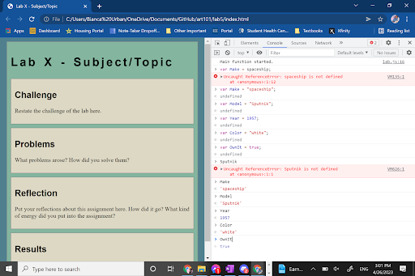

Lab 5 - Data Types and Variables
Challenge
In this lab we were meant to to figure out how the variables work on javascript.
Problems
The only problem was remembering how it was formated, for example we both forgot how to format the string with the answer in quotes.
Reflection
We decided to do a spaceship instead by using Sputnik and did some slight research to getting the information right. "Poor Laika RIP (1954-1957) who was only 3 YEARS OLD!!!!!"
Results
